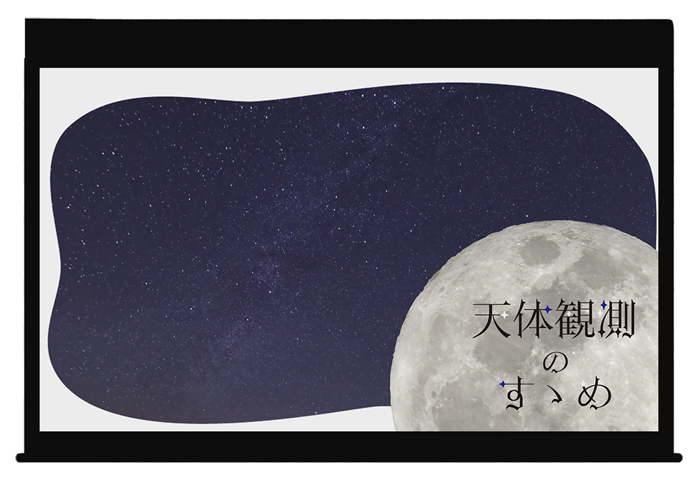
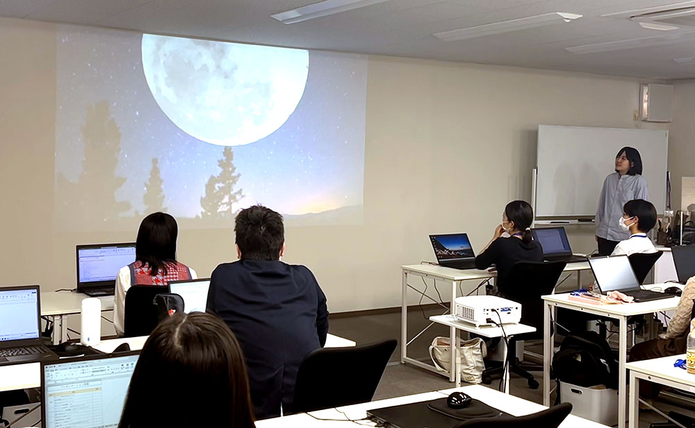

プレゼンテーション資料
「天体観測のすゝめ」
--About
訓練校の生徒と教師に向けて、プレゼンしたい題材と資料を作成し、プレゼンテーションを行いました。
--Design Concept
ターゲット・ポイント
| ターゲット | 日々忙しく、疲れている全人類 |
|---|---|
| ポイント | 自分の趣味である「天体観測」を題材に、健康に対する効能や実際に今年見られる天体ショーの内容を、飽きさせずに集中して見てもらえるようなスライドを作成しました。 |
デザイン
表紙で大きく月を動かしつつ背景で美しい星空を流して、最初から目を引くようなプレゼンになるようこだわりました。
また、猫のキャラクターを描き、一貫して登場させることで統一感を持たせました。
ただのスライドを見ていくだけではどうしても興味が薄れていってしまうので、出来るだけ自然な動きをつけて集中が続くようなプレゼンを目指しました。

スライドにこだわっても話が面白くなければ聞いてもらえないので、
自分の体験談やこの題材を選んだ経緯など、
スライドには書いていない部分を話しながら、面白いプレゼンを心掛けました。
プレゼン終了後、クラスメイトからの評価が渡され、1位の評価を貰うことが出来ました。
終わった後に「天体観測に興味をもった」「スライドがかわいかった」等の様々な反応がもらえ、準備期間を含めとても良い経験になりました。
- 制作期間
- 2日間（授業時間含む）
- 使用ツール
- PowerPoint/Illustrator/Photoshop